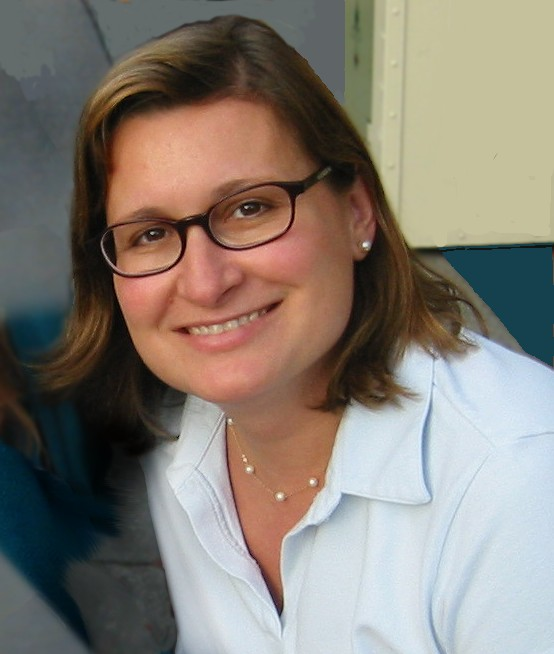

Additional materials for the paper "Towards Continuous Scientific Data Analysis and Hypothesis Evolution"
This page describes the additional materials used for the publication "Towards Continuous Scientific Data Analysis and Hypothesis Evolution", which has been accepted in the AAAI2017 conference.
If you want to get an RDF description of the contents presented in this document, you can use content negotiation on its id (https://w3id.org/dgarijo/ro/aaa2017) to retrieve it on TTL format.
A link to the pdf paper will be provided here once the paper is available on the proceedings.
How to cite the materials used on this page:
Adusumilli, Ravali; Garijo, Daniel; Gil, Yolanda; Mallick, Parag (2016). Additional materials used in the paper "Towards Continuous Scientific Data Analysis and Hypothesis Evolution" [Data set]. Zenodo. http:doi.org//10.5281/zenodo.190374
Abstract
Summary extracted from the submitted paper: "Scientific data is continuously generated throughout the world. However, analyses of these data are typically performed exactly once and on a small fragment of re-cently generated data. Ideally, data analysis would be a continuous process that uses all the data available at the time, and would be automatically re-run and updated when new data appears. We present a framework for au-tomated discovery from data repositories that tests user-provided hypotheses using expert-grade workflows, and reassesses hypotheses when more data becomes available. Novel contributions of this approach include a framework to trigger new analyses appropriate for the available data through lines of inquiry that support progressive hypothe-sis evolution, and a representation of hypothesis revisions with provenance records that can be used to inspect the results. We implemented our approach in the DISK framework, and evaluated it using two scenarios from cancer multi-omics: 1) data for new patients becomes available over time, 2) new types of data for the same pa-tients are released. We show that in all scenarios the con-fidence on the original hypotheses evolves".
Materials used in the paper
The paper associated to this page describes the DISK framework, which aims to automatize the hypothesis test-refine life cycle. See the project web page for more details.
The DISK software can be accessed on Zenodo.
Workflows
We used three different workflows in the evaluation of this paper, based on [Zhang et al 2014]. Each workflow was executed once on the 42 samples, retrieved from TCGA and CPTAC. Below you can find the three workflow templates with a sample execution and the pointers to the software used on each workflow step. Note that the 126 executions (42*3) of these workflows have not been made public due to their size an access restrictions.
Proteomics Workflow:
Workflow designed to estimate the confidence of the results in proteomic data. A snapshot of a workflow execution can be seen below:
The workflow template has been exported in the OPMW serialization, and it is available online, along with a sample execution.
The workflow uses two main steps. CalcNSAFNode uses a script to perform its main functionality. The second step is labkeyProtSearchNode, which uses a script to invoke the LabKey software. The scripts used for the integration with WINGS are also available online.
Genomics Workflow:
Workflow designed to estimate the confidence of results in genomic data. A snapshot of a workflow execution can be seen below:
The workflow template has been exported in the OPMW serialization, and it is available online, along with a sample execution.
The workflow has 7 steps: The wTopHat2 (see invocation script), MpileUpCaller (see invocation script), bcftoolsCallVariants (see invocation script), varFilterSAMTools (see invocation script), SAMToolsBAMIndex (see invocation script), CustomPRODB (see invocation script) and CalCRPKMValues (from CustomPRODB) (see invocation script).
Proteogenomics Workflow
Workflow designed to estimate the condifence of results in genomic and proteomic data combined. A snapshot of the workflow can be seen below:
The workflow template has been exported in the OPMW serialization, and it is available online, along with a sample execution.
The workflow has 9 steps: The wTopHat2 (see invocation script), MpileUpCaller (see invocation script), bcftoolsCallVariants (see invocation script), varFilterSAMTools (see invocation script), SAMToolsBAMIndex (see invocation script), CustomPRODB (see invocation script), joinFASTAFiles (see invocation script), LabKey (see invocation script) and CalcNSAFNode (see invocation script).
Datasets
The following file (now also on Zenodo) contains the name of the TCGA and CPTAC datasets used in the evaluation of our approach. All the 42 samples participate in the three different scenarios of the evaluation. The samples listed in the file have been obtained from the TCGA and CPTAC, and are a subset of those used in [Zhang et al 2014].Authors and Contributors
| Yolanda Gil  | Yolanda Gil is Director of Knowledge Technologies and at the Information Sciences Institute of the University of Southern California, and Research Professor in the Computer Science Department. Her research interests include intelligent user interfaces, social knowledge collection, provenance and assessment of trust, and knowledge management in science. Her most recent work focuses on intelligent workflow systems to support collaborative data analytics at scale. |
Daniel Garijo Verdejo | Daniel Garijo is a postdoc researcher in the Information Sciences Institute of the University of Southern California. His research activities focus on e-Science and the Semantic web, specifically on how to increase the understandability of scientific workflows using provenance, metadata, intermediate results and Linked Data. |
Varun Ratnakar | Varun Ratnakar is a research programmer at the Information Sciences Institute of the University of Southern California. He is the main developer of the Wings workflow system. |
| Ravali Adusumilli | Ravali Adusumilli is a bioinformaticist at the Mallik Lab of Stanford Univesity. She is interested in developing tools and pipelines for multi-omic analysis. |
Hunter Boyce | Hunter Boyce is a graduate student at Stanford Biomedical Informatics (BMI) program. |
| Arunima Srivastava | Arunima Srivastava is a graduate student at the Ohio State University. |
Parag Mallik | Parag Mallik is an assistant professor (Research) in Radiology. Parag is also member of the Stanford Cancer Institute and a faculty fellow of Stanford ChEM-H. After completing his PhD, he trained with Ruedi Aebersold in clinical proteomics and systems biology at the Institute for Systems Biology. |
Bibliography
In this page we make use of the following references:- [Zhang et al 2014]: Bing Zhang, Jing Wang, Xiaojing Wang, Jing Zhu, Qi Liu, et al. “Proteogenomic characterization of human colon and rectal cancer.” Nature 513,382–387, 18 September 2014.

This page is licensed under a Creative Commons Attribution-NonCommercial-ShareAlike 2.0 Generic License.